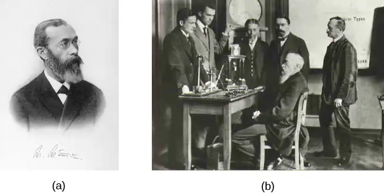
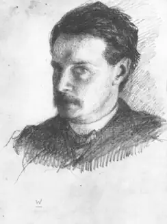
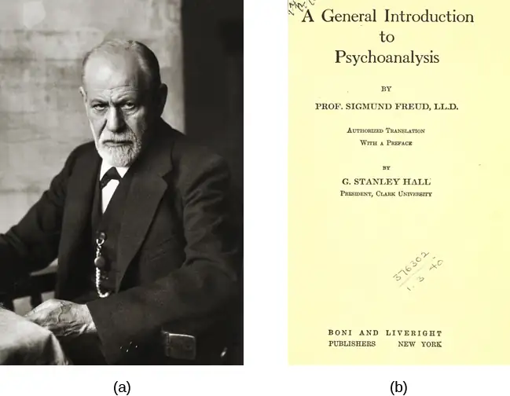
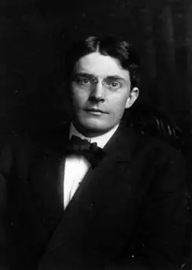
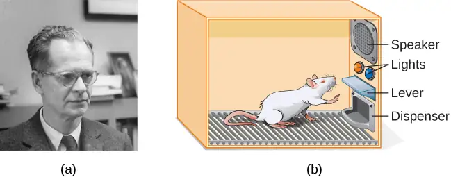
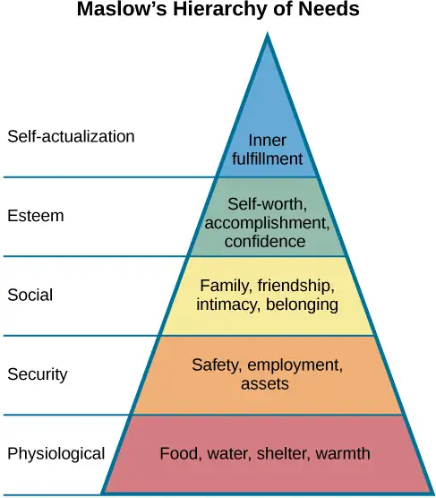
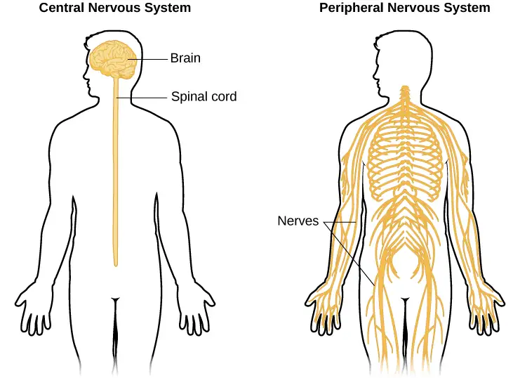
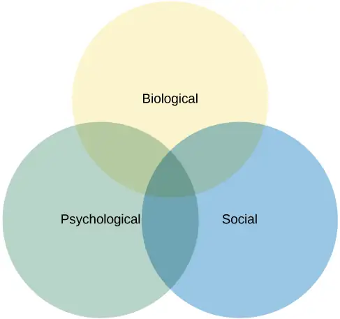
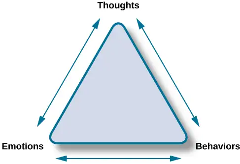

Chapter 1: Introduction to Psychology¶
Introduction¶
Clive Wearing is an accomplished musician who lost his ability to form new memories when he became sick at the age of 46. While he can remember how to play the piano perfectly, he cannot remember what he ate for breakfast just an hour ago (Sacks, 2007). James Wannerton experiences a taste sensation that is associated with the sound of words. His former girlfriend’s name tastes like rhubarb (Mundasad, 2013). John Nash was a brilliant mathematician and Nobel Prize winner. However, while he was a professor at MIT, he would tell people that the New York Times contained coded messages from extraterrestrial beings that were intended for him. He also began to hear voices and became suspicious of the people around him. Soon thereafter, Nash was diagnosed with schizophrenia and admitted to a state-run mental institution (O’Connor & Robertson, 2002). Nash was the subject of the 2001 movie A Beautiful Mind. Why did these people have these experiences? How does the human brain work? And what is the connection between the brain’s internal processes and people’s external behaviors? This textbook will introduce you to various ways that the field of psychology has explored these questions.
1.1 What Is Psychology?¶
Learning Objectives
By the end of this section, you will be able to:
- Define psychology
- Understand the merits of an education in psychology
What is creativity? What are prejudice and discrimination? What is consciousness? The field of psychology explores questions like these. Psychology refers to the scientific study of the mind and behavior. Psychologists use the scientific method to acquire knowledge. To apply the scientific method, a researcher with a question about how or why something happens will propose a tentative explanation, called a hypothesis, to explain the phenomenon. A hypothesis should fit into the context of a scientific theory, which is a broad explanation or group of explanations for some aspect of the natural world that is consistently supported by evidence over time. A theory is the best understanding we have of that part of the natural world. The researcher then makes observations or carries out an experiment to test the validity of the hypothesis. Those results are then published or presented at research conferences so that others can replicate or build on the results.
Scientists test that which is perceivable and measurable. For example, the hypothesis that a bird sings because it is happy is not a hypothesis that can be tested since we have no way to measure the happiness of a bird. We must ask a different question, perhaps about the brain state of the bird, since this can be measured. However, we can ask individuals about whether they sing because they are happy since they are able to tell us. Thus, psychological science is empirical, based on measurable data.
In general, science deals only with matter and energy, that is, those things that can be measured, and it cannot arrive at knowledge about values and morality. This is one reason why our scientific understanding of the mind is so limited, since thoughts, at least as we experience them, are neither matter nor energy. The scientific method is also a form of empiricism. An empirical method for acquiring knowledge is one based on observation, including experimentation, rather than a method based only on forms of logical argument or previous authorities.
It was not until the late 1800s that psychology became accepted as its own academic discipline. Before this time, the workings of the mind were considered under the auspices of philosophy. Given that any behavior is, at its roots, biological, some areas of psychology take on aspects of a natural science like biology. No biological organism exists in isolation, and our behavior is influenced by our interactions with others. Therefore, psychology is also a social science.
Why Study Psychology?¶
Often, students take their first psychology course because they are interested in helping others and want to learn more about themselves and why they act the way they do. Sometimes, students take a psychology course because it either satisfies a general education requirement or is required for a program of study such as nursing or pre-med. Many of these students develop such an interest in the area that they go on to declare psychology as their major. As a result, psychology is one of the most popular majors on college campuses across the United States (Johnson & Lubin, 2011). A number of well-known individuals were psychology majors. Just a few famous names on this list are Facebook’s creator Mark Zuckerberg, television personality and political satirist Jon Stewart, actress Natalie Portman, and filmmaker Wes Craven (Halonen, 2011). About 6 percent of all bachelor degrees granted in the United States are in the discipline of psychology (U.S. Department of Education, 2016).
An education in psychology is valuable for a number of reasons. Psychology students hone critical thinking skills and are trained in the use of the scientific method. Critical thinking is the active application of a set of skills to information for the understanding and evaluation of that information. The evaluation of information—assessing its reliability and usefulness— is an important skill in a world full of competing “facts,” many of which are designed to be misleading. For example, critical thinking involves maintaining an attitude of skepticism, recognizing internal biases, making use of logical thinking, asking appropriate questions, and making observations. Psychology students also can develop better communication skills during the course of their undergraduate coursework (American Psychological Association, 2011). Together, these factors increase students’ scientific literacy and prepare students to critically evaluate the various sources of information they encounter.
In addition to these broad-based skills, psychology students come to understand the complex factors that shape one’s behavior. They appreciate the interaction of our biology, our environment, and our experiences in determining who we are and how we will behave. They learn about basic principles that guide how we think and behave, and they come to recognize the tremendous diversity that exists across individuals and across cultural boundaries (American Psychological Association, 2011).
Link to Learning
Watch a brief video about some questions to consider before deciding to major in psychology to learn more.
1.2 History of Psychology¶
Learning Objectives
By the end of this section, you will be able to:
- Understand the importance of Wundt and James in the development of psychology
- Appreciate Freud’s influence on psychology
- Understand the basic tenets of Gestalt psychology
- Appreciate the important role that behaviorism played in psychology’s history
- Understand basic tenets of humanism
- Understand how the cognitive revolution shifted psychology’s focus back to the mind
Psychology is a relatively young science with its experimental roots in the 19th century, compared, for example, to human physiology, which dates much earlier. As mentioned, anyone interested in exploring issues related to the mind generally did so in a philosophical context prior to the 19th century. Two 19th century scholars, Wilhelm Wundt and William James, are generally credited as being the founders of psychology as a science and academic discipline that was distinct from philosophy. This section will provide an overview of the shifts in paradigms that have influenced psychology from Wundt and James through today.
Wundt and Structuralism¶
Wilhelm Wundt (1832–1920) was a German scientist who was the first person to be referred to as a psychologist. His famous book entitled Principles of Physiological Psychology was published in 1873. Wundt viewed psychology as a scientific study of conscious experience, and he believed that the goal of psychology was to identify components of consciousness and how those components combined to result in our conscious experience. Wundt used introspection (he called it “internal perception”), a process by which someone examines their own conscious experience as objectively as possible, making the human mind like any other aspect of nature that a scientist observed. He believed in the notion of voluntarism—that people have free will and should know the intentions of a psychological experiment if they were participating (Danziger, 1980). Wundt considered his version experimental introspection; he used instruments such as those that measured reaction time. He also wrote Volkerpsychologie in 1904 in which he suggested that psychology should include the study of culture, as it involves the study of people. Edward Titchener, one of his students, went on to develop structuralism. Its focus was on the contents of mental processes rather than their function (Pickren & Rutherford, 2010). Wundt established his psychology laboratory at the University at Leipzig in 1879 (Figure 1.2). In this laboratory, Wundt and his students conducted experiments on, for example, reaction times. A subject, sometimes in a room isolated from the scientist, would receive a stimulus such as a light, image, or sound. The subject’s reaction to the stimulus would be to push a button, and an apparatus would record the time to reaction. Wundt could measure reaction time to one-thousandth of a second (Nicolas & Ferrand, 1999).

However, despite his efforts to train individuals in the process of introspection, this process remained highly subjective, and there was very little agreement between individuals.
Functionalism¶
William James, John Dewey, and Charles Sanders Peirce helped establish functional psychology (Figure 1.3). They accepted Darwin’s theory of evolution by natural selection and viewed this theory as an explanation of an organism’s characteristics. Key to that theory is the idea that natural selection leads to organisms that are adapted to their environment, including their behavior. Adaptation means that a trait of an organism has a function for the survival and reproduction of the individual, because it has been naturally selected. As James saw it, psychology’s purpose was to study the function of behavior in the world, and as such, his perspective was known as functionalism. Functionalism focused on how mental activities helped an organism fit into its environment. Functionalism has a second, more subtle meaning in that functionalists were more interested in the operation of the whole mind rather than of its individual parts, which were the focus of structuralism. Like Wundt, James believed that introspection could serve as one means by which someone might study mental activities, but James also relied on more objective measures, including the use of various recording devices, and examinations of concrete products of mental activities and of anatomy and physiology (Gordon, 1995).

Freud and Psychoanalytic Theory¶
Perhaps one of the most influential and well-known figures in psychology’s history was Sigmund Freud (Figure 1.4). Freud (1856–1939) was an Austrian neurologist who was fascinated by patients suffering from “hysteria” and neurosis. Hysteria was an ancient diagnosis for disorders, primarily of women with a wide variety of symptoms, including physical symptoms and emotional disturbances, none of which had an apparent physical cause. Freud theorized that many of his patients’ problems arose from the unconscious mind. In Freud’s view, the unconscious mind was a repository of feelings and urges of which we have no awareness. Gaining access to the unconscious, then, was crucial to the successful resolution of the patient’s problems. According to Freud, the unconscious mind could be accessed through dream analysis, by examinations of the first words that came to people’s minds, and through seemingly innocent slips of the tongue. Psychoanalytic theory focuses on the role of a person’s unconscious, as well as early childhood experiences, and this particular perspective dominated clinical psychology for several decades (Thorne & Henley, 2005).

Freud’s ideas were influential, and you will learn more about them when you study lifespan development, personality, and therapy. For instance, many therapists believe strongly in the unconscious and the impact of early childhood experiences on the rest of a person’s life. The method of psychoanalysis, which involves the patient talking about their experiences and selves, while not invented by Freud, was certainly popularized by him and is still used today. Many of Freud’s other ideas, however, are controversial. Drew Westen (1998) argues that many of the criticisms of Freud’s ideas are misplaced, in that they attack his older ideas without taking into account later writings. Westen also argues that critics fail to consider the success of the broad ideas that Freud introduced or developed, such as the importance of childhood experiences in adult motivations, the role of unconscious versus conscious motivations in driving our behavior, the fact that motivations can cause conflicts that affect behavior, the effects of mental representations of ourselves and others in guiding our interactions, and the development of personality over time. Westen identifies subsequent research support for all of these ideas.
More modern iterations of Freud’s clinical approach have been empirically demonstrated to be effective (Knekt et al., 2008; Shedler, 2010). Some current practices in psychotherapy involve examining unconscious aspects of the self and relationships, often through the relationship between the therapist and the client. Freud’s historical significance and contributions to clinical practice merit his inclusion in a discussion of the historical movements within psychology.
Wertheimer, Koffka, Köhler, and Gestalt Psychology¶
Max Wertheimer (1880–1943), Kurt Koffka (1886–1941), and Wolfgang Köhler (1887–1967) were three German psychologists who immigrated to the United States in the early 20th century to escape Nazi Germany. These scholars are credited with introducing psychologists in the United States to various Gestalt principles. The word Gestalt roughly translates to “the form in its whole;” a major emphasis of Gestalt psychology deals with the fact that although a sensory experience can be broken down into individual parts, how those parts relate to each other as a whole is often what the individual responds to in perception. For example, a song may be made up of individual notes played by different instruments, but the real nature of the song is perceived in the combinations of these notes as they form the melody, rhythm, and harmony. In many ways, this particular perspective would have directly contradicted Wundt’s ideas of structuralism (Thorne & Henley, 2005).
Unfortunately, in moving to the United States, these scientists were forced to abandon much of their work and were unable to continue to conduct research on a large scale. These factors along with the rise of behaviorism (described next) in the United States prevented principles of Gestalt psychology from being as influential in the United States as they had been in their native Germany (Thorne & Henley, 2005). Despite these issues, several Gestalt principles are still very influential today. Considering the human individual as a whole rather than as a sum of individually measured parts became an important foundation in humanistic theory late in the century. The ideas of Gestalt have continued to influence research on sensation and perception.
Structuralism, Freud, and the Gestalt psychologists were all concerned in one way or another with describing and understanding inner experience. But other researchers had concerns that inner experience could be a legitimate subject of scientific inquiry and chose instead to exclusively study behavior, the objectively observable outcome of mental processes.
Pavlov, Watson, Skinner, and Behaviorism¶
Early work in the field of behavior was conducted by the Russian physiologist Ivan Pavlov (1849–1936). Pavlov studied a form of learning behavior called a conditioned reflex, in which an animal or human produced a reflex (unconscious) response to a stimulus and, over time, was conditioned to produce the response to a different stimulus that the experimenter associated with the original stimulus. The reflex Pavlov worked with was salivation in response to the presence of food. The salivation reflex could be elicited using a second stimulus, such as a specific sound, that was presented in association with the initial food stimulus several times. Once the response to the second stimulus was “learned,” the food stimulus could be omitted. Pavlov’s “classical conditioning” is only one form of learning behavior studied by behaviorists.
John B. Watson (1878–1958) was an influential American psychologist whose most famous work occurred during the early 20th century at Johns Hopkins University (Figure 1.5). While Wundt and James were concerned with understanding conscious experience, Watson thought that the study of consciousness was flawed. Because he believed that objective analysis of the mind was impossible, Watson preferred to focus directly on observable behavior and try to bring that behavior under control. Watson was a major proponent of shifting the focus of psychology from the mind to behavior, and this approach of observing and controlling behavior came to be known as behaviorism. A major object of study by behaviorists was learned behavior and its interaction with inborn qualities of the organism. Behaviorism commonly used animals in experiments under the assumption that what was learned using animal models could, to some degree, be applied to human behavior. Indeed, Tolman (1938) stated, “I believe that everything important in psychology (except … such matters as involve society and words) can be investigated in essence through the continued experimental and theoretical analysis of the determiners of rat behavior at a choice-point in a maze.”

Behaviorism dominated experimental psychology for several decades, and its influence can still be felt today (Thorne & Henley, 2005). Behaviorism is largely responsible for establishing psychology as a scientific discipline through its objective methods and especially experimentation. In addition, it is used in behavioral and cognitive-behavioral therapy. Behavior modification is commonly used in classroom settings. Behaviorism has also led to research on environmental influences on human behavior.
B. F. Skinner (1904–1990) was an American psychologist (Figure 1.6). Like Watson, Skinner was a behaviorist, and he concentrated on how behavior was affected by its consequences. Therefore, Skinner spoke of reinforcement and punishment as major factors in driving behavior. As a part of his research, Skinner developed a chamber that allowed the careful study of the principles of modifying behavior through reinforcement and punishment. This device, known as an operant conditioning chamber (or more familiarly, a Skinner box), has remained a crucial resource for researchers studying behavior (Thorne & Henley, 2005).

The Skinner box is a chamber that isolates the subject from the external environment and has a behavior indicator such as a lever or a button. When the animal pushes the button or lever, the box is able to deliver a positive reinforcement of the behavior (such as food) or a punishment (such as a noise).
Skinner’s focus on positive and negative reinforcement of learned behaviors had a lasting influence in psychology that has waned somewhat since the growth of research in cognitive psychology. Despite this, conditioned learning is still used in human behavioral modification (Greengrass, 2004).
Maslow, Rogers, and Humanism¶
During the early 20th century, American psychology was dominated by behaviorism and psychoanalysis. However, some psychologists were uncomfortable with what they viewed as limited perspectives being so influential to the field. They objected to the pessimism and determinism (all actions driven by the unconscious) of Freud. They also disliked the reductionism, or simplifying nature, of behaviorism. Behaviorism is also deterministic at its core, because it sees human behavior as entirely determined by a combination of genetics and environment. Some psychologists began to form their own ideas that emphasized personal control, intentionality, and a true predisposition for “good” as important for our self-concept and our behavior. Thus, humanism emerged. Humanism is a perspective within psychology that emphasizes the potential for good that is innate to all humans. Two of the most well-known proponents of humanistic psychology are Abraham Maslow and Carl Rogers (O’Hara, n.d.).
Abraham Maslow (1908–1970) was an American psychologist who is best known for proposing a hierarchy of human needs in motivating behavior (Figure 1.7). Although this concept will be discussed in more detail in a later chapter, a brief overview will be provided here. Maslow asserted that so long as basic needs necessary for survival were met (e.g., food, water, shelter), higher-level needs (e.g., social needs) would begin to motivate behavior. According to Maslow, the highest-level needs relate to self-actualization, a process by which we achieve our full potential. Obviously, the focus on the positive aspects of human nature that are characteristic of the humanistic perspective is evident (Thorne & Henley, 2005). Humanistic psychologists rejected, on principle, the research approach based on reductionist experimentation in the tradition of the physical and biological sciences, because it missed the “whole” human being. Beginning with Maslow and Rogers, there was an insistence on a humanistic research program. This program has been largely qualitative (not measurement-based), but there exist a number of quantitative research strains within humanistic psychology, including research on happiness, self-concept, meditation, and the outcomes of humanistic psychotherapy (Friedman, 2008).

Carl Rogers (1902–1987) was also an American psychologist who, like Maslow, emphasized the potential for good that exists within all people (Figure 1.8). Rogers used a therapeutic technique known as client-centered therapy in helping his clients deal with problematic issues that resulted in their seeking psychotherapy. Unlike a psychoanalytic approach in which the therapist plays an important role in interpreting what conscious behavior reveals about the unconscious mind, client-centered therapy involves the patient taking a lead role in the therapy session. Rogers believed that a therapist needed to display three features to maximize the effectiveness of this particular approach: unconditional positive regard, genuineness, and empathy. Unconditional positive regard refers to the fact that the therapist accepts their client for who they are, no matter what they might say. Provided these factors, Rogers believed that people were more than capable of dealing with and working through their own issues (Thorne & Henley, 2005).
Humanism has been influential to psychology as a whole. Both Maslow and Rogers are well-known names among students of psychology (you will read more about both later in this text), and their ideas have influenced many scholars. Furthermore, Rogers’ client-centered approach to therapy is still commonly used in psychotherapeutic settings today (O’hara, n.d.)
Link to Learning
View a brief video of Carl Rogers describing his therapeutic approach to learn more.
The Cognitive Revolution¶
Behaviorism’s emphasis on objectivity and focus on external behavior had pulled psychologists’ attention away from the mind for a prolonged period of time. The early work of the humanistic psychologists redirected attention to the individual human as a whole, and as a conscious and self-aware being. By the 1950s, new disciplinary perspectives in linguistics, neuroscience, and computer science were emerging, and these areas revived interest in the mind as a focus of scientific inquiry. This particular perspective has come to be known as the cognitive revolution (Miller, 2003). By 1967, Ulric Neisser published the first textbook entitled Cognitive Psychology, which served as a core text in cognitive psychology courses around the country (Thorne & Henley, 2005).
Although no one person is entirely responsible for starting the cognitive revolution, Noam Chomsky was very influential in the early days of this movement (Figure 1.9). Chomsky (1928–), an American linguist, was dissatisfied with the influence that behaviorism had had on psychology. He believed that psychology’s focus on behavior was short-sighted and that the field had to re-incorporate mental functioning into its purview if it were to offer any meaningful contributions to understanding behavior (Miller, 2003).
European psychology had never really been as influenced by behaviorism as had American psychology; and thus, the cognitive revolution helped reestablish lines of communication between European psychologists and their American counterparts. Furthermore, psychologists began to cooperate with scientists in other fields, like anthropology, linguistics, computer science, and neuroscience, among others. This interdisciplinary approach often was referred to as the cognitive sciences, and the influence and prominence of this particular perspective resonates in modern-day psychology (Miller, 2003).
Dig Deeper: Feminist Psychology
The science of psychology has had an impact on human wellbeing, both positive and negative. The dominant influence of Western, White, and male academics in the early history of psychology meant that psychology developed with the biases inherent in those individuals, which often had negative consequences for members of society who were not White or male. Women, members of ethnic minorities in both the United States and other countries, and individuals with sexual orientations other than straight had difficulties entering the field of psychology and therefore influencing its development. They also suffered from the attitudes of White male psychologists who were not immune to the nonscientific attitudes prevalent in the society in which they developed and worked. Until the 1960s, the science of psychology was largely a “womanless” psychology (Crawford & Marecek, 1989), meaning that few women were able to practice psychology, so they had little influence on what was studied. In addition, the experimental subjects of psychology were mostly men, which resulted from underlying assumptions that gender had no influence on psychology and that women were not of sufficient interest to study.
An article by Naomi Weisstein, first published in 1968 (Weisstein, 1993), stimulated a feminist revolution in psychology by presenting a critique of psychology as a science. She also specifically criticized male psychologists for constructing the psychology of women entirely out of their own cultural biases and without careful experimental tests to verify any of their characterizations of women. Weisstein used, as examples, statements by prominent psychologists in the 1960s, such as this quote by Bruno Bettleheim: “We must start with the realization that, as much as women want to be good scientists or engineers, they want first and foremost to be womanly companions of men and to be mothers.” Weisstein’s critique formed the foundation for the subsequent development of a feminist psychology that attempted to be free of the influence of male cultural biases on our knowledge of the psychology of women.
Crawford & Marecek (1989) identify several feminist approaches to psychology that can be described as feminist psychology. These include re-evaluating and discovering the contributions of women to the history of psychology, studying psychological gender differences, and questioning the male bias present across the practice of the scientific approach to knowledge.
Multicultural And Cross-Cultural Psychology¶
Culture impacts individuals, groups, and society. An ongoing issue researchers are trying to correct is that certain populations have been over-studied and the results of these studies have been applied to other populations. For example, Henrich, Heine, and Norenzayan discuss how WEIRD societies have been overstudied and the results have been wrongly applied to non-WEIRD societies (2010). WEIRD stands for western, educated, industrialized, rich, and democratic. Henrich, Heine, and Norenzayan found that there are many differences between people in the WEIRD group and people in less industrialized, less urban, and non-Western societies. These differences occur in a variety of areas, including perception, cooperation, and moral reasoning. That is, people vary depending on their culture and environment. Multicultural psychologists develop theories and conduct research with diverse populations, typically within one country. Cross-cultural psychologists compare populations across countries, such as participants from the United States compared to participants from China.
In 1920, Francis Cecil Sumner was the first African American to receive a PhD in psychology in the United States. Sumner established a psychology degree program at Howard University, leading to the education of a new generation of African American psychologists (Black, Spence, and Omari, 2004). Much of the work of early psychologists from diverse backgrounds was dedicated to challenging intelligence testing and promoting innovative educational methods for children. George I. Sanchez contested such testing with Mexican American children. As a psychologist of Mexican heritage, he pointed out that the language and cultural barriers in testing were keeping children from equal opportunities (Guthrie, 1998). By 1940, he was teaching with his doctoral degree at the University of Texas at Austin and challenging segregated educational practices (Romo, 1986).
Two famous African American researchers and psychologists are Mamie Phipps Clark and her husband, Kenneth Clark. They are best known for their studies conducted on African American children and doll preference, research that was instrumental in the Brown v. Board of Education Supreme Court desegregation case. The Clarks applied their research to social services and opened the first child guidance center in Harlem (American Psychological Association, 2019).
Listen to the podcast below describing the Clarks' research and impact on the Supreme Court decision.
Link to Learning
Listen to a podcast about the influence of an African American's psychology research on the historic Brown v. Board of Education civil rights case to learn more.
The American Psychological Association has several ethnically based organizations for professional psychologists that facilitate interactions among members. Some psychologists belonging to specific ethnic groups or cultures are interested in studying their own communities, and these organizations provide an opportunity for the growth of research on the interplay between culture and psychology.
Women in Psychology¶
Although rarely given credit, women have been contributing to psychology since its inception as a field of study. In 1894, Margaret Floy Washburn was the first woman awarded the doctoral degree in psychology. She wrote The Animal Mind: A Textbook of Comparative Psychology, and it was the standard in the field for over 20 years. In the mid 1890s, Mary Whiton Calkins completed all requirements toward the PhD in psychology, but Harvard University refused to award her that degree because she was a woman. She had been taught and mentored by William James, who tried and failed to convince Harvard to award her the doctoral degree. Her memory research studied primacy and recency (Madigan & O’Hara, 1992), and she also wrote about how structuralism and functionalism both explained self-psychology (Calkins, 1906).
Another influential woman, Mary Cover Jones, conducted a study she considered to be a sequel to John B. Watson’s study of Little Albert (you’ll learn about this study in the chapter on Learning). Jones unconditioned fear in Little Peter, who had been afraid of rabbits (Jones, 1924).
Ethnic minority women contributing to the field of psychology include Martha Bernal and Inez Beverly Prosser; their studies were related to education. Bernal, the first Latina to earn her doctoral degree in psychology (1962) conducted much of her research with Mexican American children. Prosser was the first African American woman awarded the PhD in 1933 at the University of Cincinnati (Benjamin, Henry, & McMahon, 2005).
1.3 Contemporary Psychology¶
Learning Objectives
By the end of this section, you will be able to:
- Appreciate the diversity of interests and foci within psychology
- Understand basic interests and applications in each of the described areas of psychology
- Demonstrate familiarity with some of the major concepts or important figures in each of the described areas of psychology
Contemporary psychology is a diverse field that is influenced by all of the historical perspectives described in the preceding section. Reflective of the discipline’s diversity is the diversity seen within the American Psychological Association (APA). The APA is a professional organization representing psychologists in the United States. The APA is the largest organization of psychologists in the world, and its mission is to advance and disseminate psychological knowledge for the betterment of people. There are 54 divisions within the APA, representing a wide variety of specialties that range from Societies for the Psychology of Religion and Spirituality to Exercise and Sport Psychology to Behavioral Neuroscience and Comparative Psychology. Reflecting the diversity of the field of psychology itself, members, affiliate members, and associate members span the spectrum from students to doctoral-level psychologists, and come from a variety of places including educational settings, criminal justice, hospitals, the armed forces, and industry (American Psychological Association, 2014). G. Stanley Hall was the first president of the APA. Before he earned his doctoral degree, he was an adjunct instructor at Wilberforce University, a historically Black college/university (HBCU), while serving as faculty at Antioch College. Hall went on to work under William James, earning his PhD. Eventually, he became the first president of Clark University in Massachusetts when it was founded (Pickren & Rutherford, 2010).
The Association for Psychological Science (APS) was founded in 1988 and seeks to advance the scientific orientation of psychology. Its founding resulted from disagreements between members of the scientific and clinical branches of psychology within the APA. The APS publishes five research journals and engages in education and advocacy with funding agencies. A significant proportion of its members are international, although the majority is located in the United States. Other organizations provide networking and collaboration opportunities for professionals of several ethnic or racial groups working in psychology, such as the National Latina/o Psychological Association (NLPA), the Asian American Psychological Association (AAPA), the Association of Black Psychologists (ABPsi), and the Society of Indian Psychologists (SIP). Most of these groups are also dedicated to studying psychological and social issues within their specific communities.
This section will provide an overview of the major subdivisions within psychology today in the order in which they are introduced throughout the remainder of this textbook. This is not meant to be an exhaustive listing, but it will provide insight into the major areas of research and practice of modern-day psychologists.
Link to Learning
Please visit this website about the divisions within the APA to learn more.
View these student resources also provided by the APA.
Biopsychology and Evolutionary Psychology¶
As the name suggests, biopsychology explores how our biology influences our behavior. While biological psychology is a broad field, many biological psychologists want to understand how the structure and function of the nervous system is related to behavior (Figure 1.10). As such, they often combine the research strategies of both psychologists and physiologists to accomplish this goal (as discussed in Carlson, 2013).

The research interests of biological psychologists span a number of domains, including but not limited to, sensory and motor systems, sleep, drug use and abuse, ingestive behavior, reproductive behavior, neurodevelopment, plasticity of the nervous system, and biological correlates of psychological disorders. Given the broad areas of interest falling under the purview of biological psychology, it will probably come as no surprise that individuals from all sorts of backgrounds are involved in this research, including biologists, medical professionals, physiologists, and chemists. This interdisciplinary approach is often referred to as neuroscience, of which biological psychology is a component (Carlson, 2013).
While biopsychology typically focuses on the immediate causes of behavior based in the physiology of a human or other animal, evolutionary psychology seeks to study the ultimate biological causes of behavior. To the extent that a behavior is impacted by genetics, a behavior, like any anatomical characteristic of a human or animal, will demonstrate adaption to its surroundings. These surroundings include the physical environment and, since interactions between organisms can be important to survival and reproduction, the social environment. The study of behavior in the context of evolution has its origins with Charles Darwin, the co-discoverer of the theory of evolution by natural selection. Darwin was well aware that behaviors should be adaptive and wrote books titled, The Descent of Man (1871) and The Expression of the Emotions in Man and Animals (1872), to explore this field.
Evolutionary psychology, and specifically, the evolutionary psychology of humans, has enjoyed a resurgence in recent decades. To be subject to evolution by natural selection, a behavior must have a significant genetic cause. In general, we expect all human cultures to express a behavior if it is caused genetically, since the genetic differences among human groups are small. The approach taken by most evolutionary psychologists is to predict the outcome of a behavior in a particular situation based on evolutionary theory and then to make observations, or conduct experiments, to determine whether the results match the theory. It is important to recognize that these types of studies are not strong evidence that a behavior is adaptive, since they lack information that the behavior is in some part genetic and not entirely cultural (Endler, 1986). Demonstrating that a trait, especially in humans, is naturally selected is extraordinarily difficult; perhaps for this reason, some evolutionary psychologists are content to assume the behaviors they study have genetic determinants (Confer et al., 2010).
One other drawback of evolutionary psychology is that the traits that we possess now evolved under environmental and social conditions far back in human history, and we have a poor understanding of what these conditions were. This makes predictions about what is adaptive for a behavior difficult. Behavioral traits need not be adaptive under current conditions, only under the conditions of the past when they evolved, about which we can only hypothesize.
There are many areas of human behavior for which evolution can make predictions. Examples include memory, mate choice, relationships between kin, friendship and cooperation, parenting, social organization, and status (Confer et al., 2010).
Evolutionary psychologists have had success in finding experimental correspondence between observations and expectations. In one example, in a study of mate preference differences between men and women that spanned 37 cultures, Buss (1989) found that women valued earning potential factors greater than men, and men valued potential reproductive factors (youth and attractiveness) greater than women in their prospective mates. In general, the predictions were in line with the predictions of evolution, although there were deviations in some cultures.
Sensation and Perception¶
Scientists interested in both physiological aspects of sensory systems as well as in the psychological experience of sensory information work within the area of sensation and perception (Figure 1.11). As such, sensation and perception research is also quite interdisciplinary. Imagine walking between buildings as you move from one class to another. You are inundated with sights, sounds, touch sensations, and smells. You also experience the temperature of the air around you and maintain your balance as you make your way. These are all factors of interest to someone working in the domain of sensation and perception.
As described in a later chapter that focuses on the results of studies in sensation and perception, our experience of our world is not as simple as the sum total of all of the sensory information (or sensations) together. Rather, our experience (or perception) is complex and is influenced by where we focus our attention, our previous experiences, and even our cultural backgrounds.
Cognitive Psychology¶
As mentioned in the previous section, the cognitive revolution created an impetus for psychologists to focus their attention on better understanding the mind and mental processes that underlie behavior. Thus, cognitive psychology is the area of psychology that focuses on studying cognitions, or thoughts, and their relationship to our experiences and our actions. Like biological psychology, cognitive psychology is broad in its scope and often involves collaborations among people from a diverse range of disciplinary backgrounds. This has led some to coin the term cognitive science to describe the interdisciplinary nature of this area of research (Miller, 2003).
Cognitive psychologists have research interests that span a spectrum of topics, ranging from attention to problem solving to language to memory. The approaches used in studying these topics are equally diverse. Given such diversity, cognitive psychology is not captured in one chapter of this text per se; rather, various concepts related to cognitive psychology will be covered in relevant portions of the chapters in this text on sensation and perception, thinking and intelligence, memory, lifespan development, social psychology, and therapy.
Developmental Psychology¶
Developmental psychology is the scientific study of development across a lifespan. Developmental psychologists are interested in processes related to physical maturation. However, their focus is not limited to the physical changes associated with aging, as they also focus on changes in cognitive skills, moral reasoning, social behavior, and other psychological attributes.
Early developmental psychologists focused primarily on changes that occurred through reaching adulthood, providing enormous insight into the differences in physical, cognitive, and social capacities that exist between very young children and adults. For instance, research by Jean Piaget (Figure 1.12) demonstrated that very young children do not demonstrate object permanence. Object permanence refers to the understanding that physical things continue to exist, even if they are hidden from us. If you were to show an adult a toy, and then hide it behind a curtain, the adult knows that the toy still exists. However, very young infants act as if a hidden object no longer exists. The age at which object permanence is achieved is somewhat controversial (Munakata, McClelland, Johnson, and Siegler, 1997).

While Piaget was focused on cognitive changes during infancy and childhood as we move to adulthood, there is an increasing interest in extending research into the changes that occur much later in life. This may be reflective of changing population demographics of developed nations as a whole. As more and more people live longer lives, the number of people of advanced age will continue to increase. Indeed, it is estimated that there were just over 40 million people aged 65 or older living in the United States in 2010. However, by 2020, this number is expected to increase to about 55 million. By the year 2050, it is estimated that nearly 90 million people in this country will be 65 or older (Department of Health and Human Services, n.d.).
Personality Psychology¶
Personality psychology focuses on patterns of thoughts and behaviors that make each individual unique. Several individuals (e.g., Freud and Maslow) that we have already discussed in our historical overview of psychology, and the American psychologist Gordon Allport, contributed to early theories of personality. These early theorists attempted to explain how an individual’s personality develops from their given perspective. For example, Freud proposed that personality arose as conflicts between the conscious and unconscious parts of the mind were carried out over the lifespan. Specifically, Freud theorized that an individual went through various psychosexual stages of development. According to Freud, adult personality would result from the resolution of various conflicts that centered on the migration of erogenous (or sexual pleasure-producing) zones from the oral (mouth) to the anus to the phallus to the genitals. Like many of Freud’s theories, this particular idea was controversial and did not lend itself to experimental tests (Person, 1980).
More recently, the study of personality has taken on a more quantitative approach. Rather than explaining how personality arises, research is focused on identifying personality traits, measuring these traits, and determining how these traits interact in a particular context to determine how a person will behave in any given situation. Personality traits are relatively consistent patterns of thought and behavior, and many have proposed that five trait dimensions are sufficient to capture the variations in personality seen across individuals. These five dimensions are known as the “Big Five” or the Five Factor model, and include dimensions of conscientiousness, agreeableness, neuroticism, openness, and extraversion (Figure 1.13). Each of these traits has been demonstrated to be relatively stable over the lifespan (e.g., Rantanen, Metsäpelto, Feldt, Pulkinnen, and Kokko, 2007; Soldz & Vaillant, 1999; McCrae & Costa, 2008) and is influenced by genetics (e.g., Jang, Livesly, and Vernon, 1996).
![A diagram includes five vertically stacked arrows, which point to the left and right. A dimension's first letter, name, and description are included inside of each arrow. A box to the left of each arrow includes traits associated with a low score for that arrow's dimension. A box to the right of each arrow includes traits associated with a high score for that arrow's dimension. The top arrow includes the trait “openness,” which is described with the words, “imagination,” “feelings,” “actions,” and “ideas.” The box to the left of that arrow includes the words, “practical,” “conventional,” and “prefers routine,” while the box to the right of that arrow includes the words, “curious,” “wide range of interests,” and “independent.” The next arrow includes the trait “conscientiousness,” which is described with the words, “competence,” “self-discipline,” “thoughtfulness,” and “goal-driven.” The box to the left of that arrow includes the words, “impulsive,” “careless,” and “disorganized,” while the box to the right of that arrow includes the words, “hardworking,” “dependable,” and “organized.” The next arrow includes the trait “extroversion,” which is described with the words, “sociability,” “assertiveness,” and “emotional expression.” The box to the left of that arrow includes the words, “quiet,” “reserved,” and “withdrawn,” while the box to the right of that arrow includes the words, “outgoing,” “warm,” and “seeks adventure.” The next arrow includes the trait “agreeableness,” which is described with the words, “cooperative,” “trustworthy,” and “good-natured.” The box to the left of that arrow includes the words, “critical,” “uncooperative,” and “suspicious,” while the box to the right of that arrow includes the words, “helpful,” “trusting,” and “empathetic.” The next arrow includes the trait “neuroticism,” which is described as “tendency toward unstable emotions.” The box to the left of that arrow includes the words, “calm,” “even-tempered,” and “secure,” while the box to the right of that arrow includes the words, “anxious,” “unhappy,” and “prone to negative emotions.”](img/cnx-psych-01-03-bigfive.webp)
Social Psychology¶
Social psychology focuses on how we interact with and relate to others. Social psychologists conduct research on a wide variety of topics that include differences in how we explain our own behavior versus how we explain the behaviors of others, prejudice, and attraction, and how we resolve interpersonal conflicts. Social psychologists have also sought to determine how being among other people changes our own behavior and patterns of thinking.
There are many interesting examples of social psychological research, and you will read about many of these in a later chapter of this textbook. Until then, you will be introduced to one of the most controversial psychological studies ever conducted. Stanley Milgram was an American social psychologist who is most famous for research that he conducted on obedience. After the holocaust, in 1961, a Nazi war criminal, Adolf Eichmann, who was accused of committing mass atrocities, was put on trial. Many people wondered how German soldiers were capable of torturing prisoners in concentration camps, and they were unsatisfied with the excuses given by soldiers that they were simply following orders. At the time, most psychologists agreed that few people would be willing to inflict such extraordinary pain and suffering, simply because they were obeying orders. Milgram decided to conduct research to determine whether or not this was true (Figure 1.14). As you will read later in the text, Milgram found that nearly two-thirds of his participants were willing to deliver what they believed to be lethal shocks to another person, simply because they were instructed to do so by an authority figure (in this case, a man dressed in a lab coat). This was in spite of the fact that participants received payment for simply showing up for the research study and could have chosen not to inflict pain or more serious consequences on another person by withdrawing from the study. No one was actually hurt or harmed in any way, Milgram’s experiment was a clever ruse that took advantage of research confederates, those who pretend to be participants in a research study who are actually working for the researcher and have clear, specific directions on how to behave during the research study (Hock, 2009). Milgram’s and others’ studies that involved deception and potential emotional harm to study participants catalyzed the development of ethical guidelines for conducting psychological research that discourage the use of deception of research subjects, unless it can be argued not to cause harm and, in general, requiring informed consent of participants.
![An advertisement reads: “Public Announcement. We will pay you $4.00 for one hour of your time. Persons Needed for a Study of Memory. We will pay five hundred New Haven men to help us complete a scientific study of memory and learning. The study is being done at Yale University. Each person who participates will be paid $4.00 (plus 50 cents carfare) for approximately 1 hour’s time. We need you for only one hour: there are no further obligations. You may choose the time you would like to come (evenings, weekdays, or weekends). No special training, education, or experience is needed. We want: factory workers, city employees, laborers, barbers, businessmen, clerks, professional people, telephone workers, construction workers, salespeople, white-collar workers, and others. All persons must be between the ages of 20 and 50. High school and college students cannot be used. If you meet these qualifications, fill out the coupon below and mail it now to Professor Stanley Milgram, Department of Psychology, Yale University, New Haven. You will be notified later of the specific time and place of the study. We reserve the right to decline any application. You will be paid $4.00 (plus 50 cents carfare) as soon as you arrive at the laboratory.” There is a dotted line and the below section reads: “TO: PROF. STANLEY MILGRAM, DEPARTMENT OF PSYCHOLOGY, YALE UNIVERSITY, NEW HAVEN, CONN. I want to take part in this study of memory and learning. I am between the ages of 20 and 50. I will be paid $4.00 (plus 50 cents carfare) if I participate.” Below this is a section to be filled out by the applicant. The fields are NAME (Please Print), ADDRESS, TELEPHONE NO. Best time to call you, AGE, OCCUPATION, SEX, CAN YOU COME: WEEKDAYS, EVENINGS, WEEKENDS.](img/cnx-psych-01-03-milgram.webp)
Industrial-Organizational Psychology¶
Industrial-Organizational psychology (I-O psychology) is a subfield of psychology that applies psychological theories, principles, and research findings in industrial and organizational settings. I-O psychologists are often involved in issues related to personnel management, organizational structure, and workplace environment. Businesses often seek the aid of I-O psychologists to make the best hiring decisions as well as to create an environment that results in high levels of employee productivity and efficiency. In addition to its applied nature, I-O psychology also involves conducting scientific research on behavior within I-O settings (Riggio, 2013).
Health Psychology¶
Health psychology focuses on how health is affected by the interaction of biological, psychological, and sociocultural factors. This particular approach is known as the biopsychosocial model (Figure 1.15). Health psychologists are interested in helping individuals achieve better health through public policy, education, intervention, and research. Health psychologists might conduct research that explores the relationship between one’s genetic makeup, patterns of behavior, relationships, psychological stress, and health. They may research effective ways to motivate people to address patterns of behavior that contribute to poorer health (MacDonald, 2013).

Sport and Exercise Psychology¶
Researchers in sport and exercise psychology study the psychological aspects of sport performance, including motivation and performance anxiety, and the effects of sport on mental and emotional wellbeing. Research is also conducted on similar topics as they relate to physical exercise in general. The discipline also includes topics that are broader than sport and exercise but that are related to interactions between mental and physical performance under demanding conditions, such as fire fighting, military operations, artistic performance, and surgery.
Clinical Psychology¶
Clinical psychology is the area of psychology that focuses on the diagnosis and treatment of psychological disorders and other problematic patterns of behavior. As such, it is generally considered to be a more applied area within psychology; however, some clinicians are also actively engaged in scientific research. Counseling psychology is a similar discipline that focuses on emotional, social, vocational, and health-related outcomes in individuals who are considered psychologically healthy.
As mentioned earlier, both Freud and Rogers provided perspectives that have been influential in shaping how clinicians interact with people seeking psychotherapy. While aspects of the psychoanalytic theory are still found among some of today’s therapists who are trained from a psychodynamic perspective, Rogers’s ideas about client-centered therapy have been especially influential in shaping how many clinicians operate. Furthermore, both behaviorism and the cognitive revolution have shaped clinical practice in the forms of behavioral therapy, cognitive therapy, and cognitive-behavioral therapy (Figure 1.16). Issues related to the diagnosis and treatment of psychological disorders and problematic patterns of behavior will be discussed in detail in later chapters of this textbook.

By far, this is the area of psychology that receives the most attention in popular media, and many people mistakenly assume that all psychology is clinical psychology.
Forensic Psychology¶
Forensic psychology is a branch of psychology that deals with questions of psychology as they arise in the context of the justice system. For example, forensic psychologists (and forensic psychiatrists) will assess a person’s competency to stand trial, assess the state of mind of a defendant, act as consultants on child custody cases, consult on sentencing and treatment recommendations, and advise on issues such as eyewitness testimony and children’s testimony (American Board of Forensic Psychology, 2014). In these capacities, they will typically act as expert witnesses, called by either side in a court case to provide their research- or experience-based opinions. As expert witnesses, forensic psychologists must have a good understanding of the law and provide information in the context of the legal system rather than just within the realm of psychology. Forensic psychologists are also used in the jury selection process and witness preparation. They may also be involved in providing psychological treatment within the criminal justice system. Criminal profilers are a relatively small proportion of psychologists that act as consultants to law enforcement.
1.4 Careers in Psychology¶
Learning Objectives
By the end of this section, you will be able to:
- Understand educational requirements for careers in academic settings
- Understand the demands of a career in an academic setting
- Understand career options outside of academic settings
Psychologists can work in many different places doing many different things. In general, anyone wishing to continue a career in psychology at a 4-year institution of higher education will have to earn a doctoral degree in psychology for some specialties and at least a master’s degree for others. In most areas of psychology, this means earning a PhD in a relevant area of psychology. Literally, PhD refers to a doctor of philosophy degree, but here, philosophy does not refer to the field of philosophy per se. Rather, philosophy in this context refers to many different disciplinary perspectives that would be housed in a traditional college of liberal arts and sciences.
The requirements to earn a PhD vary from country to country and even from school to school, but usually, individuals earning this degree must complete a dissertation. A dissertation is essentially a long research paper or bundled published articles describing research that was conducted as a part of the candidate’s doctoral training. In the United States, a dissertation generally has to be defended before a committee of expert reviewers before the degree is conferred (Figure 1.17).
Once someone earns a PhD, they may seek a faculty appointment at a college or university. Being on the faculty of a college or university often involves dividing time between teaching, research, and service to the institution and profession. The amount of time spent on each of these primary responsibilities varies dramatically from school to school, and it is not uncommon for faculty to move from place to place in search of the best personal fit among various academic environments. The previous section detailed some of the major areas that are commonly represented in psychology departments around the country; thus, depending on the training received, an individual could be anything from a biological psychologist to a clinical psychologist in an academic setting (Figure 1.18).
Link to Learning
Use this interactive tool and explore different careers in psychology based on degree levels to learn more.
Other Careers in Academic Settings¶
Often times, schools offer more courses in psychology than their full-time faculty can teach. In these cases, it is not uncommon to bring in an adjunct faculty member or instructor. Adjunct faculty members and instructors usually have an advanced degree in psychology, but they often have primary careers outside of academia and serve in this role as a secondary job. Alternatively, they may not hold the doctoral degree required by most 4-year institutions and use these opportunities to gain experience in teaching. Furthermore, many 2-year colleges and schools need faculty to teach their courses in psychology. In general, many of the people who pursue careers at these institutions have master’s degrees in psychology, although some PhDs make careers at these institutions as well.
Some people earning PhDs may enjoy research in an academic setting. However, they may not be interested in teaching. These individuals might take on faculty positions that are exclusively devoted to conducting research. This type of position would be more likely an option at large, research-focused universities.
In some areas in psychology, it is common for individuals who have recently earned their PhD to seek out positions in postdoctoral training programs that are available before going on to serve as faculty. In most cases, young scientists will complete one or two postdoctoral programs before applying for a full-time faculty position. Postdoctoral training programs allow young scientists to further develop their research programs and broaden their research skills under the supervision of other professionals in the field.
Career Options Outside of Academic Settings¶
Individuals who wish to become practicing clinical psychologists have another option for earning a doctoral degree, which is known as a PsyD. A PsyD is a doctor of psychology degree that is increasingly popular among individuals interested in pursuing careers in clinical psychology. PsyD programs generally place less emphasis on research-oriented skills and focus more on application of psychological principles in the clinical context (Norcross & Castle, 2002).
Regardless of whether earning a PhD or PsyD, in most states, an individual wishing to practice as a licensed clinical or counseling psychologist may complete postdoctoral work under the supervision of a licensed psychologist. Within the last few years, however, several states have begun to remove this requirement, which would allow people to get an earlier start in their careers (Munsey, 2009). After an individual has met the state requirements, their credentials are evaluated to determine whether they can sit for the licensure exam. Only individuals that pass this exam can call themselves licensed clinical or counseling psychologists (Norcross, n.d.). Licensed clinical or counseling psychologists can then work in a number of settings, ranging from private clinical practice to hospital settings. It should be noted that clinical psychologists and psychiatrists do different things and receive different types of education. While both can conduct therapy and counseling, clinical psychologists have a PhD or a PsyD, whereas psychiatrists have a doctor of medicine degree (MD). As such, licensed clinical psychologists can administer and interpret psychological tests, while psychiatrists can prescribe medications.
Individuals earning a PhD can work in a variety of settings, depending on their areas of specialization. For example, someone trained as a biopsychologist might work in a pharmaceutical company to help test the efficacy of a new drug. Someone with a clinical background might become a forensic psychologist and work within the legal system to make recommendations during criminal trials and parole hearings, or serve as an expert in a court case.
While earning a doctoral degree in psychology is a lengthy process, usually taking between 5–6 years of graduate study (DeAngelis, 2010), there are a number of careers that can be attained with a master’s degree in psychology. People who wish to provide psychotherapy can become licensed to serve as various types of professional counselors (Hoffman, 2012). Relevant master’s degrees are also sufficient for individuals seeking careers as school psychologists (National Association of School Psychologists, n.d.), in some capacities related to sport psychology (American Psychological Association, 2014), or as consultants in various industrial settings (Landers, 2011, June 14). Undergraduate coursework in psychology may be applicable to other careers such as psychiatric social work or psychiatric nursing, where assessments and therapy may be a part of the job.
As mentioned in the opening section of this chapter, an undergraduate education in psychology is associated with a knowledge base and skill set that many employers find quite attractive. It should come as no surprise, then, that individuals earning bachelor’s degrees in psychology find themselves in a number of different careers, as shown in Table 1.1. Examples of a few such careers can involve serving as case managers, working in sales, working in human resource departments, and teaching in high schools. The rapidly growing realm of healthcare professions is another field in which an education in psychology is helpful and sometimes required. For example, the Medical College Admission Test (MCAT) exam that people must take to be admitted to medical school now includes a section on the psychological foundations of behavior.
Table 1.1
| Top Occupations Employing Graduates with a BA in Psychology (Fogg, Harrington, Harrington, & Shatkin, 2012) | |
|---|---|
| Ranking | Occupation |
| 1 | Mid- and top-level management (executive, administrator) |
| 2 | Sales |
| 3 | Social work |
| 4 | Other management positions |
| 5 | Human resources (personnel, training) |
| 6 | Other administrative positions |
| 7 | Insurance, real estate, business |
| 8 | Marketing and sales |
| 9 | Healthcare (nurse, pharmacist, therapist) |
| 10 | Finance (accountant, auditor) |
Link to Learning
The APA provides career information about various areas of psychology.
Chapter Review¶
Key Terms¶
- American Psychological Association (APA)
- professional organization representing psychologists in the United States
- behaviorism
- focus on observing and controlling behavior
- biopsychology
- study of how biology influences behavior
- biopsychosocial model
- perspective that asserts that biology, psychology, and social factors interact to determine an individual’s health
- clinical psychology
- area of psychology that focuses on the diagnosis and treatment of psychological disorders and other problematic patterns of behavior
- cognitive psychology
- study of cognitions, or thoughts, and their relationship to experiences and actions
- counseling psychology
- area of psychology that focuses on improving emotional, social, vocational, and other aspects of the lives of psychologically healthy individuals
- developmental psychology
- scientific study of development across a lifespan
- dissertation
- long research paper about research that was conducted as a part of the candidate’s doctoral training
- empirical method
- method for acquiring knowledge based on observation, including experimentation, rather than a method based only on forms of logical argument or previous authorities
- forensic psychology
- area of psychology that applies the science and practice of psychology to issues within and related to the justice system
- functionalism
- focused on how mental activities helped an organism adapt to its environment
- humanism
- perspective within psychology that emphasizes the potential for good that is innate to all humans
- introspection
- process by which someone examines their own conscious experience in an attempt to break it into its component parts
- ology
- suffix that denotes “scientific study of”
- personality psychology
- study of patterns of thoughts and behaviors that make each individual unique
- personality trait
- consistent pattern of thought and behavior
- PhD
- (doctor of philosophy) doctoral degree conferred in many disciplinary perspectives housed in a traditional college of liberal arts and sciences
- postdoctoral training program
- allows young scientists to further develop their research programs and broaden their research skills under the supervision of other professionals in the field
- psychoanalytic theory
- focus on the role of the unconscious in affecting conscious behavior
- psychology
- scientific study of the mind and behavior
- PsyD
- (doctor of psychology) doctoral degree that places less emphasis on research-oriented skills and focuses more on application of psychological principles in the clinical context
- sport and exercise psychology
- area of psychology that focuses on the interactions between mental and emotional factors and physical performance in sports, exercise, and other activities
- structuralism
- understanding the conscious experience through introspection
Summary¶
1.1 What Is Psychology?¶
Psychology is defined as the scientific study of mind and behavior. Students of psychology develop critical thinking skills, become familiar with the scientific method, and recognize the complexity of behavior.
1.2 History of Psychology¶
Before the time of Wundt and James, questions about the mind were considered by philosophers. However, both Wundt and James helped create psychology as a distinct scientific discipline. Wundt was a structuralist, which meant he believed that our cognitive experience was best understood by breaking that experience into its component parts. He thought this was best accomplished by introspection.
William James was the first American psychologist, and he was a proponent of functionalism. This particular perspective focused on how mental activities served as adaptive responses to an organism’s environment. Like Wundt, James also relied on introspection; however, his research approach also incorporated more objective measures as well.
Sigmund Freud believed that understanding the unconscious mind was absolutely critical to understand conscious behavior. This was especially true for individuals that he saw who suffered from various hysterias and neuroses. Freud relied on dream analysis, slips of the tongue, and free association as means to access the unconscious. Psychoanalytic theory remained a dominant force in clinical psychology for several decades.
Gestalt psychology was very influential in Europe. Gestalt psychology takes a holistic view of an individual and his experiences. As the Nazis came to power in Germany, Wertheimer, Koffka, and Köhler immigrated to the United States. Although they left their laboratories and their research behind, they did introduce America to Gestalt ideas. Some of the principles of Gestalt psychology are still very influential in the study of sensation and perception.
One of the most influential schools of thought within psychology’s history was behaviorism. Behaviorism focused on making psychology an objective science by studying overt behavior and deemphasizing the importance of unobservable mental processes. John Watson is often considered the father of behaviorism, and B. F. Skinner’s contributions to our understanding of principles of operant conditioning cannot be underestimated.
As behaviorism and psychoanalytic theory took hold of so many aspects of psychology, some began to become dissatisfied with psychology’s picture of human nature. Thus, a humanistic movement within psychology began to take hold. Humanism focuses on the potential of all people for good. Both Maslow and Rogers were influential in shaping humanistic psychology.
During the 1950s, the landscape of psychology began to change. A science of behavior began to shift back to its roots of focus on mental processes. The emergence of neuroscience and computer science aided this transition. Ultimately, the cognitive revolution took hold, and people came to realize that cognition was crucial to a true appreciation and understanding of behavior.
1.3 Contemporary Psychology¶
Psychology is a diverse discipline that is made up of several major subdivisions with unique perspectives. Biological psychology involves the study of the biological bases of behavior. Sensation and perception refer to the area of psychology that is focused on how information from our sensory modalities is received, and how this information is transformed into our perceptual experiences of the world around us. Cognitive psychology is concerned with the relationship that exists between thought and behavior, and developmental psychologists study the physical and cognitive changes that occur throughout one’s lifespan. Personality psychology focuses on individuals’ unique patterns of behavior, thought, and emotion. Industrial and organizational psychology, health psychology, sport and exercise psychology, forensic psychology, and clinical psychology are all considered applied areas of psychology. Industrial and organizational psychologists apply psychological concepts to I-O settings. Health psychologists look for ways to help people live healthier lives, and clinical psychology involves the diagnosis and treatment of psychological disorders and other problematic behavioral patterns. Sport and exercise psychologists study the interactions between thoughts, emotions, and physical performance in sports, exercise, and other activities. Forensic psychologists carry out activities related to psychology in association with the justice system.
1.4 Careers in Psychology¶
Generally, academic careers in psychology require doctoral degrees. However, there are a number of nonacademic career options for people who have master’s degrees in psychology. While people with bachelor’s degrees in psychology have more limited psychology-related career options, the skills acquired as a function of an undergraduate education in psychology are useful in a variety of work contexts.
References¶
References
American Board of Forensic Psychology. (2014). Brochure. http://www.abfp.com/brochure.asp
American Psychological Association. (2014). www.apa.org
American Psychological Association. (2014). Graduate training and career possibilities in exercise and sport psychology. http://www.apadivisions.org/division-47/about/resources/training.aspx?item=1
American Psychological Association. (2019). Maime Phipps Clark, PhD, and Kenneth Clark, PhD. https://www.apa.org/pi/oema/resources/ethnicity-health/psychologists/clark
American Psychological Association. (2011). Psychology as a career. http://www.apa.org/education/undergrad/psych-career.aspx
Benjamin, L., Henry, K., & McMahon, L. (2005). Inez Beverly Prosser and the education of African Americans. Journal of the History of the Behavioral Sciences, 41, 43–62. https://onlinelibrary.wiley.com/doi/abs/10.1002/jhbs.20058
Betancourt, H., & López, S. R. (1993). The study of culture, ethnicity, and race in American psychology. American Psychologist, 48, 629–637.
Black, S. R., Spence, S. A., & Omari, S. R. (2004). Contributions of African Americans to the field of psychology. Journal of Black Studies, 35, 40–64.
Buss, D. M. (1989). Sex differences in human mate preferences: Evolutionary hypotheses tested in 37 cultures. Behavioral and Brain Sciences, 12, 1–49.
Calkins, M. W. (1906). A reconciliation between structural and functional psychology. Psychological Review, 13, 61–81.
Carlson, N. R. (2013). Physiology of Behavior (11th ed.). Pearson.
Confer, J. C., Easton, J. A., Fleischman, D. S., Goetz, C. D., Lewis, D. M. G., Perilloux, C., & Buss, D. M. (2010). Evolutionary psychology. Controversies, questions, prospects, and limitations. American Psychologist, 65, 100–126.
Crawford, M., & Marecek, J. (1989). Psychology reconstructs the female 1968–1988. Psychology of Women Quarterly, 13, 147–165.
Danziger, K. (1980). The history of introspection reconsidered. Journal of the History of the Behavioral Sciences, 16, 241–262.
Danziger, K. (1980). Wundt's psychological experiment in the light of his philosophy of science. Psychological Research, 42, 109–122.
Darwin, C. (1871). The descent of man and selection in relation to sex. John Murray.
Darwin, C. (1872). The expression of the emotions in man and animals. John Murray.
DeAngelis, T. (2010). Fear not. gradPSYCH Magazine, 8, 38.
Department of Health and Human Services. (n.d.). Projected future growth of the older population. http://www.aoa.gov/Aging_Statistics/future_growth/future_growth.aspx#age
Endler, J. A. (1986). Natural Selection in the Wild. Princeton University Press.
Fogg, N. P., Harrington, P. E., Harrington, T. F., & Shatkin, L. (2012). College majors handbook with real career paths and payoffs (3rd ed.). JIST Publishing.
Franko, D. L., et al. (2012). Racial/ethnic differences in adults in randomized clinical trials of binge eating disorder. Journal of Consulting and Clinical Psychology, 80, 186–195.
Friedman, H. (2008), Humanistic and positive psychology: The methodological and epistemological divide. The Humanistic Psychologist, 36, 113–126.
Gordon, O. E. (1995). A brief history of psychology. http://www.psych.utah.edu/gordon/Classes/Psy4905Docs/PsychHistory/index.html#maptop
Greengrass, M. (2004). 100 years of B.F. Skinner. Monitor on Psychology, 35, 80.
Guthrie, R. (1998). Even the rat was white (2nd edition). Allyn and Bacon.
Halonen, J. S. (2011). White paper: Are there too many psychology majors? Prepared for the Staff of the State University System of Florida Board of Governors. http://www.cogdop.org/page_attachments/0000/0200/FLA_White_Paper_for_cogop_posting.pdf
Hock, R. R. (2009). Social psychology. Forty studies that changed psychology: Explorations into the history of psychological research (pp. 308–317). Pearson.
Hoffman, C. (2012). Careers in clinical, counseling, or school psychology; mental health counseling; clinical social work; marriage & family therapy and related professions. http://www.indiana.edu/~psyugrad/advising/docs/Careers%20in%20Mental%20Health%20Counseling.pdf
Jang, K. L., Livesly, W. J., & Vernon, P. A. (1996). Heritability of the Big Five personality dimensions and their facets: A twin study. Journal of Personality, 64, 577–591.
Johnson, R., & Lubin, G. (2011). College exposed: What majors are most popular, highest paying and most likely to get you a job. Business Insider.com. http://www.businessinsider.com/best-college-majors-highest-income-most-employed-georgetwon-study-2011-6?op=1
Jones, M. C. (1924). A laboratory study of fear: The case of Peter. Pedagogical Seminary, 31, 308–315.
Knekt, P. P., et al. (2008). Randomized trial on the effectiveness of long- and short-term psychodynamic psychotherapy and solution-focused therapy on psychiatric symptoms during a 3-year follow-up. Psychological Medicine: A Journal of Research In Psychiatry And The Allied Sciences, 38, 689–703.
Landers, R. N. (2011, June 14). Grad school: Should I get a PhD or Master’s in I/O psychology? http://neoacademic.com/2011/06/14/grad-school-should-i-get-a-ph-d-or-masters-in-io-psychology/#.UuKKLftOnGg
Macdonald, C. (2013). Health psychology center presents: What is health psychology? http://healthpsychology.org/what-is-health-psychology/
Madigan, S. & O'Hara, R. (1992). Short-term memory at the turn of the century: Mary Whiton Calkins's memory research. American Psychologist, 47, 170–174.
McCrae, R. R. & Costa, P. T. (2008). Empirical and theoretical status of the five-factor model of personality traits. In G. J. Boyle, G. Matthews, & D. H. Saklofske (Eds.), The Sage handbook of personality theory and assessment. Vol. 1 Personality theories and models. Sage.
Michalski, D., Kohout, J., Wicherski, M., & Hart, B. (2011). 2009 Doctorate Employment Survey. APA Center for Workforce Studies. http://www.apa.org/workforce/publications/09-doc-empl/index.aspx
Miller, G. A. (2003). The cognitive revolution: A historical perspective. Trends in Cognitive Sciences, 7, 141–144.
Munakata, Y., McClelland, J. L., Johnson, M. H., & Siegler, R. S. (1997). Rethinking infant knowledge: Toward an adaptive process account of successes and failures in object permanence tasks. Psychological Review, 104, 689–713.
Mundasad, S. (2013). Word-taste synaesthesia: Tasting names, places, and Anne Boleyn. http://www.bbc.co.uk/news/health-21060207
Munsey, C. (2009). More states forgo a postdoc requirement. Monitor on Psychology, 40, 10.
National Association of School Psychologists. (n.d.). Becoming a nationally certified school psychologist (NCSP). http://www.nasponline.org/CERTIFICATION/becomeNCSP.aspx
Nicolas, S., & Ferrand, L. (1999). Wundt’s laboratory at Leipzig in 1891. History of Psychology, 2, 194–203.
Norcross, J. C. (n.d.) Clinical versus counseling psychology: What’s the diff? http://www.csun.edu/~hcpsy002/Clinical%20Versus%20Counseling%20Psychology.pdf
Norcross, J. C., & Castle, P. H. (2002). Appreciating the PsyD: The facts. Eye on Psi Chi, 7, 22–26.
O’Connor, J. J., & Robertson, E. F. (2002). John Forbes Nash. http://www-groups.dcs.st-and.ac.uk/~history/Biographies/Nash.html
O’Hara, M. (n.d.). Historic review of humanistic psychology. http://www.ahpweb.org/index.php?option=com_k2&view=item&layout=item&id=14&Itemid=24
Person, E. S. (1980). Sexuality as the mainstay of identity: Psychoanalytic perspectives. Signs, 5, 605–630.
Pickren, W. & Rutherford, A. (2010). A history of modern psychology in context. Wiley.
Rantanen, J., Metsäpelto, R. L., Feldt, T., Pulkkinen, L., & Kokko, K. (2007). Long-term stability in the Big Five personality traits in adulthood. Scandinavian Journal of Psychology, 48, 511–518.
Riggio, R. E. (2013). What is industrial/organizational psychology? Psychology Today. http://www.psychologytoday.com/blog/cutting-edge-leadership/201303/what-is-industrialorganizational-psychology
Romo, R. (1986). George I. Sanchez and the civil rights movement: 1940–1960. La Raza Law Journal, 1, 342–362.
Sacks, O. (2007). A neurologists notebook: The abyss, music and amnesia. The New Yorker. http://www.newyorker.com/reporting/2007/09/24/070924fa_fact_sacks?currentPage=all
Shedler, J. (2010). The efficacy of psychodynamic psychotherapy. American Psychologist, 65(2), 98–109.
Soldz, S., & Vaillant, G. E. (1999). The Big Five personality traits and the life course: A 45-year longitudinal study. Journal of Research in Personality, 33, 208–232.
Thorne, B. M., & Henley, T. B. (2005). Connections in the history and systems of psychology (3rd ed.). Houghton Mifflin Company.
Tolman, E. C. (1938). The determiners of behavior at a choice point. Psychological Review, 45, 1–41.
U.S. Department of Education, National Center for Education Statistics. (2016). The Condition of Education, 2016 (NCES 2016-144).
Weisstein, N. (1993). Psychology constructs the female: Or, the fantasy life of the male psychologist (with some attention to the fantasies of his friends, the male biologist and the male anthropologist). Feminism and Psychology, 3, 195–210.
Westen, D. (1998). The scientific legacy of Sigmund Freud, toward a psychodynamically informed psychological science. Psychological Bulletin, 124, 333–371.
Review Questions¶
1.1 What Is Psychology?¶
1. Which of the following was mentioned as a skill to which psychology students would be exposed?
- critical thinking
- use of the scientific method
- critical evaluation of sources of information
- all of the above
Answer
D
2. Before psychology became a recognized academic discipline, matters of the mind were undertaken by those in ________.
- biology
- chemistry
- philosophy
- physics
Answer
C
3. In the scientific method, a hypothesis is a(n) ________.
- observation
- measurement
- test
- proposed explanation
Answer
D
1.2 History of Psychology¶
4. Based on your reading, which theorist would have been most likely to agree with this statement: Perceptual phenomena are best understood as a combination of their components.
- William James
- Max Wertheimer
- Carl Rogers
- Noam Chomsky
Answer
B
5. ________ is most well-known for proposing his hierarchy of needs.
- Noam Chomsky
- Carl Rogers
- Abraham Maslow
- Sigmund Freud
Answer
C
6. Rogers believed that providing genuineness, empathy, and ________ in the therapeutic environment for his clients was critical to their being able to deal with their problems.
- structuralism
- functionalism
- Gestalt
- unconditional positive regard
Answer
D
7. The operant conditioning chamber (aka ________ box) is a device used to study the principles of operant conditioning.
- Skinner
- Watson
- James
- Koffka
Answer
A
1.3 Contemporary Psychology¶
8. A researcher interested in how changes in the cells of the hippocampus (a structure in the brain related to learning and memory) are related to memory formation would be most likely to identify as a(n) ________ psychologist.
- biological
- health
- clinical
- social
Answer
A
9. An individual’s consistent pattern of thought and behavior is known as a(n) ________.
- psychosexual stage
- object permanence
- personality
- perception
Answer
C
10. In Milgram’s controversial study on obedience, nearly ________ of the participants were willing to administer what appeared to be lethal electrical shocks to another person because they were told to do so by an authority figure.
- 1/3
- 2/3
- 3/4
- 4/5
Answer
B
11. A researcher interested in what factors make an employee best suited for a given job would most likely identify as a(n) ________ psychologist.
- personality
- clinical
- social
- I-O
Answer
D
1.4 Careers in Psychology¶
12. If someone wanted to become a psychology professor at a 4-year college, they would probably need a ________ degree in psychology.
- bachelor of science
- bachelor of art
- master’s
- PhD
Answer
D
13. The ________ places less emphasis on research and more emphasis on application of therapeutic skills.
- PhD
- PsyD
- postdoctoral training program
- dissertation
Answer
B
14. Which of the following degrees would be the minimum required to teach psychology courses in high school?
- PhD
- PsyD
- master’s degree
- bachelor’s degree
Answer
D
15. One would need at least a(n) ________ degree to serve as a school psychologist.
- associate’s
- bachelor’s
- master’s
- doctoral
Answer
C
Critical Thinking Questions¶
1.1 What Is Psychology?¶
16. Why do you think psychology courses like this one are often requirements of so many different programs of study?
Answer
Psychology courses deal with a number of issues that are helpful in a variety of settings. The text made mention of the types of skills as well as the knowledge base with which students of psychology become familiar. As mentioned in the link to learning, psychology is often helpful/valued in fields in which interacting with others is a major part of the job.
17. Why do you think many people might be skeptical about psychology being a science?
Answer
One goal of psychology is the study of the mind. Science cannot directly study the mind, because it is not a form of matter or energy. This might create some skepticism about the scientific nature of psychology.
1.2 History of Psychology¶
18. How did the object of study in psychology change over the history of the field since the 19th century?
Answer
In its early days, psychology could be defined as the scientific study of mind or mental processes. Over time, psychology began to shift more towards the scientific study of behavior. However, as the cognitive revolution took hold, psychology once again began to focus on mental processes as necessary to the understanding of behavior.
19. In part, what aspect of psychology was the behaviorist approach to psychology a reaction to?
Answer
Behaviorists studied objectively observable behavior partly in reaction to the psychologists of the mind who were studying things that were not directly observable.
1.3 Contemporary Psychology¶
20. Given the incredible diversity among the various areas of psychology that were described in this section, how do they all fit together?
Answer
Although the different perspectives all operate on different levels of analyses, have different foci of interests, and different methodological approaches, all of these areas share a focus on understanding and/or correcting patterns of thought and/or behavior.
21. What are the potential ethical concerns associated with Milgram’s research on obedience?
Answer
Many people have questioned how ethical this particular research was. Although no one was actually harmed in Milgram’s study, many people have questioned how the knowledge that you would be willing to inflict incredible pain and/or death to another person, simply because someone in authority told you to do so, would affect someone’s self-concept and psychological health. Furthermore, the degree to which deception was used in this particular study raises a few eyebrows.
1.4 Careers in Psychology¶
22. Why is an undergraduate education in psychology so helpful in a number of different lines of work?
Answer
An undergraduate education in psychology hones critical thinking skills. These skills are useful in many different work settings.
23. Other than a potentially greater salary, what would be the reasons an individual would continue on to get a graduate degree in psychology?
Answer
The graduate degree would be a stronger guarantee of working in a psychology-related field and one would have greater control over the specialty of that work. It would allow one to practice in a clinical setting. In general, it would allow someone to work in a more independent or supervisory capacity.
Personal Application Question¶
1.1 What Is Psychology?¶
24. Why are you taking this course? What do you hope to learn about during this course?
1.2 History of Psychology¶
25. Freud is probably one of the most well-known historical figures in psychology. Where have you encountered references to Freud or his ideas about the role that the unconscious mind plays in determining conscious behavior?
1.3 Contemporary Psychology¶
26. Now that you’ve been briefly introduced to some of the major areas within psychology, which are you most interested in learning more about? Why?
1.4 Careers in Psychology¶
27. Which of the career options in the field of psychology is most appealing to you?
Adapted from Psychology 2e by OpenStax, licensed under CC BY 4.0. Access the original for free at openstax.org. Changes: converted to the web reading format of The Open Book Project.